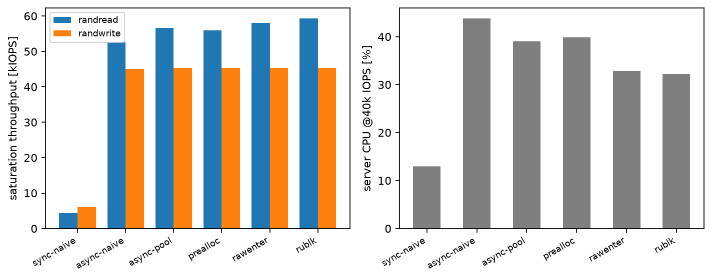
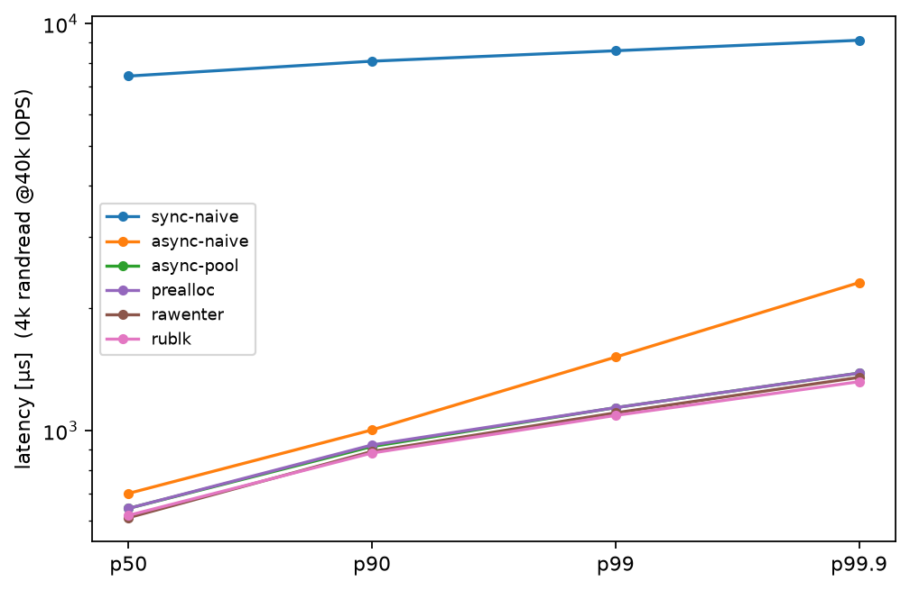
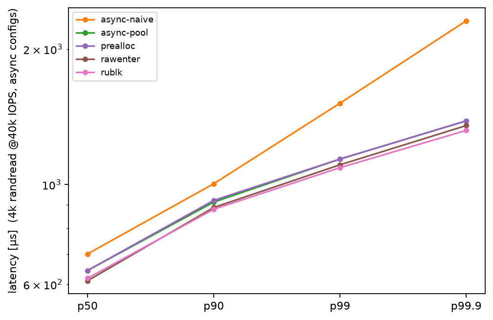
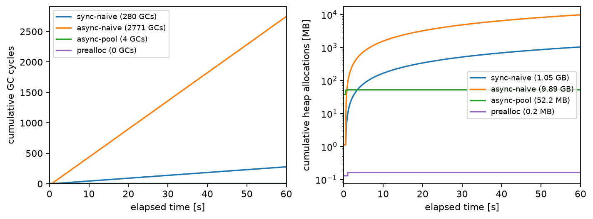
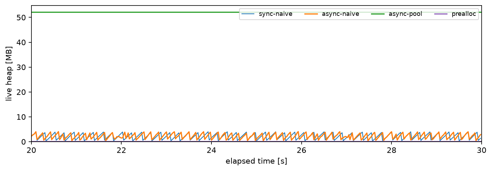
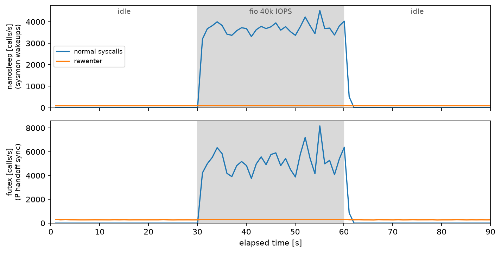
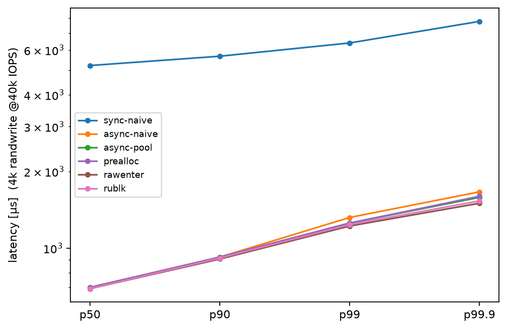
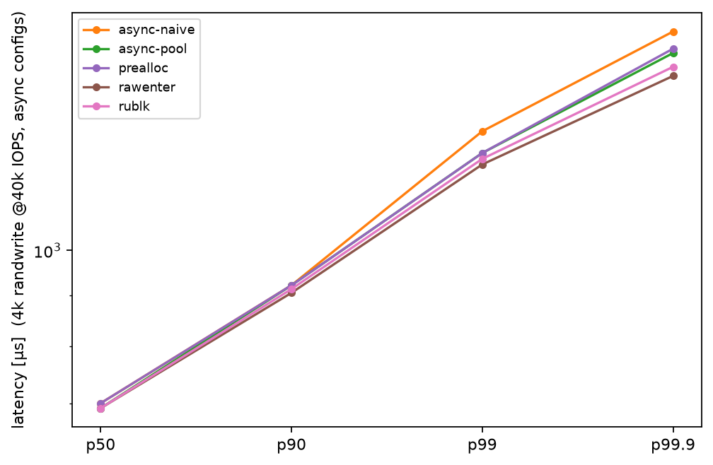
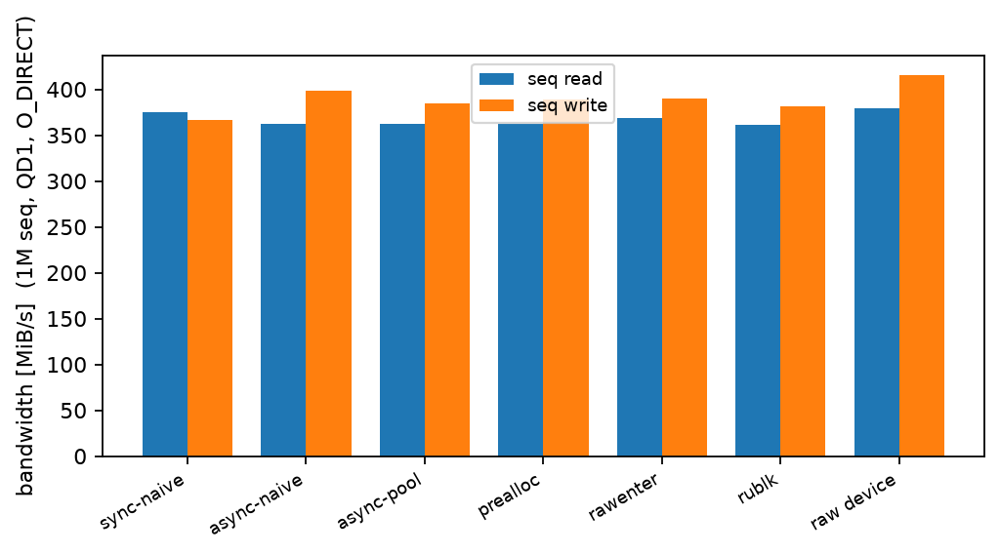

純Goのユーザ空間ブロックデバイスでテールレイテンシを追い込む。pprofが特定した2つのボトルネック、非同期化で飽和IOPSが12倍、sync.PoolがGCのテールを消し、そしてRawSyscallでランタイム固定費を返上してRust製rublkに並ぶまでの実測記録。
Linuxにはublkという、ユーザ空間でブロックデバイスを実装する仕組みがあります（kernel 6.0以降）。
NBDのようにネットワーク越しではなく、io_uringのuring_cmdでカーネルと直結するので、ユーザ空間を経由するオーバーヘッドが小さく抑えられています。
これをcgoなしの純Goで実装します。ファイルをbackingにしたループバックデバイス（/dev/loop0の自作版）を作り、/dev/ublkbNとして使えるようにします。
そしてfioでテールレイテンシ（p90、p99、p99.9）を計測しながら、次の工程を進めます。
pprofとGODEBUG=gctrace=1で原因を特定し、非同期化、sync.Pool、固定バッファと1段階ずつ改善する以降はすべて実測です。 検証はすべてQEMU/KVM上の使い捨てVM（Ubuntu 24.04、kernel 6.8）で行い、コード全文はgoblkリポジトリに置いてあります。
登場人物は3つです。
/dev/ublk-control：制御用のキャラクタデバイス。デバイスの追加、削除、起動コマンドはここに発行する/dev/ublkcN：デバイス毎のキャラクタデバイス。IO要求の受け渡し（データプレーン）はここ/dev/ublkbN：最終的に作成されるブロックデバイス。mkfsやfioの対象はこれ面白いのは、制御もデータもすべてio_uringのIORING_OP_URING_CMDで行うところです。
ioctlのように同期発行するのではなく、SQE（submission queue entry、発行キューのエントリ）の中にコマンド構造体を埋め込んで非同期に発行し、結果はCQE（completion queue entry、完了キューのエントリ）で受け取ります。
sequenceDiagram
participant App as IO要求 (アプリ)
participant K as カーネル (blk-mq / ublk_drv)
participant S as ublkサーバ
participant B as バックエンド (backingファイル)
S->>K: FETCH_REQ (tag=0..63) を事前に発行しておく
App->>K: read(2)
K-->>S: CQE (tag=k)。desc[k] に op/sector/長さ
S->>B: pread (backingファイルを読む)
B-->>S: データ
S->>K: COMMIT_AND_FETCH_REQ (result)
K-->>App: IO完了
queue depth（今回は64）ぶんのFETCH_REQを最初に全部発行しておき、以後は「CQEを受ける、処理する、COMMIT_AND_FETCH_REQを返す」の繰り返しで、1 IOにつき1往復です。
要求の中身（オペコード、開始セクタ、長さ）はublksrv_io_descという24バイトの構造体で渡されますが、syscallではなく/dev/ublkcNをmmapした共有メモリ越しに読みます。
Goでio_uringを使うライブラリはいくつかありますが、ublkに必要なのはSQE128（SQEを128バイトに拡張してコマンド埋め込み領域を確保する設定）とuring_cmdくらいなので、標準ライブラリのsyscallパッケージだけで最小実装しました。
依存ゼロです。
やることは3つあります。
1. リングの作成。 io_uring_setup(2)（x86_64ではsyscall番号425）を呼び、返ったfdをmmapします（SQ（submission queue）リング、CQ（completion queue）リング、SQE配列の3領域。最近のカーネルはSQとCQが単一mmapにまとまります）。
2. SQEの投入。 SQE配列のtail & mask番目に書いてアトミックにtailを進めます。
SQE128では1エントリ128バイトで、オフセット48以降の80バイトがcmd領域です。
ublkのコマンド構造体（制御用32バイト、IO用16バイト）をここに直接埋めます。
type SQE struct {
Opcode uint8
Flags uint8
Ioprio uint16
FD int32
Off uint64 // uring_cmdではここがcmd_op (u32)
Addr uint64
Len uint32
OpFlags uint32
UserData uint64
BufIG uint16
Personality uint16
SpliceFDIn int32
Cmd [80]byte // SQE128: offset 48〜127がコマンド領域
}3. 送信と完了待ち。 io_uring_enter(2)（426）をIORING_ENTER_GETEVENTS付きで呼ぶとブロッキングで完了を待てます。
CQはhead != tailの間、16バイトのCQEを読んでheadを進めるだけです。
リング上のhead/tailはカーネルと並行アクセスになるので、sync/atomicで読み書きします（liburingのacquire/releaseバリアに対応します）。
ここまでで300行強。「io_uringライブラリ」は、機能を絞れば案外小さいのです。
デバイス作成は次の順番で、すべて/dev/ublk-controlへのuring_cmdです。
GET_FEATURES：カーネルの対応フラグ確認ADD_DEV：ublksrv_ctrl_dev_info（キュー数、queue depth、最大IOサイズ等）を渡す。dev_id = 0xFFFFFFFFで自動採番/dev/ublkcNをopenし、ディスクリプタ領域をmmapFETCH_REQを投入SET_PARAMS：デバイスサイズ、論理ブロックサイズなどSTART_DEV：ここで/dev/ublkbNが作成されるオペコードはkernel 6.4以降ioctl互換エンコードで、たとえばADD_DEVは_IOWR('u', 0x04, struct ublksrv_ctrl_cmd)、すなわち0xC0207504です。
ublk固有の制約がひとつあります。
あるキューのIOコマンドは、最初に発行したOSスレッドから発行し続けなければなりません（カーネルがキューを担当taskに紐付けて検証します）。
goroutineは自由にOSスレッドを移動するので、そのままだとEINVALになります。キューを担当するgoroutineの先頭でruntime.LockOSThreadを呼び、スレッドを固定する必要があります。
func (q *queue) run(ready chan<- error) {
runtime.LockOSThread() // ublkはキューを最初に発行したtaskに紐付ける
...
}バックエンドはファイルです。
起動時に普通のopen(2)でO_DIRECT付きで開き、以後のIOはこのfdに対して行います。
データ本体の受け渡しにはいくつかモードがあり、素朴版ではuser copyモード（UBLK_F_USER_COPY、kernel 6.4以降）を使います。バッファを事前登録せず、サーバが/dev/ublkcNを特殊オフセットでpread/pwriteしてデータを自分で移す方式です。リクエストが来るたびに次の処理をします。
buf := make([]byte, n) // 毎回確保
switch op {
case OpRead:
preadFull(backingFD, buf, off) // backingファイルから読み
pwriteFull(cfd, buf, userCopyOff) // ublkcN経由でカーネルへ渡す
case OpWrite:
preadFull(cfd, buf, userCopyOff) // カーネルからデータを回収し
pwriteFull(backingFD, buf, off) // backingファイルへ書く
case OpFlush:
syscall.Fdatasync(backingFD)
}user copyのpread/pwriteオフセットにはqueue idとtagをビット埋め込みします（0x80000000 + qid<<41 + tag<<25）。
「使い終わったバッファは捨てる、掃除はGCの仕事」。 普段のGoなら何の問題もないコードです。 ブロックデバイスのデータパスでは、どうでしょうか。
cache=none、aio=native）としてVMへ渡し、ゲスト内のブロックデバイス（/dev/vdc、/dev/vdd）を直接バックエンドにする。ホストのページキャッシュは経由しない。8GiB×2、全域prefill済みtaskset、fioはCPU 2-7--direct=1、libaio、ramp 3秒。固定レート測定は60秒、飽和測定は20秒。4kランダムは飽和測定がQD64（queue depthと同じ）、固定レート測定がQD32。1MシーケンシャルはQD1（後述）--rate_iops）で実施する。飽和状態のレイテンシはLittleの法則で「QD÷スループット」に決まってしまうので、応答分布を比べるには全構成に同じ到着レートを与える実装は4段階に分け、段階ごとに実装方式を1箇所だけ変えます。
v1 sync-naive（毎IOでmake、backing IOは同期）、v2 async-naive（backing IOだけ非同期化。アロケーションはv1と同一）、v3 async-pool（さらにバッファをsync.Poolで使い回す）、v4 prealloc（tag毎の固定バッファでアロケーション自体を排除）です。
主指標は、実SSDバックエンドをQD64で飽和させたときの飽和IOPSです。同じデバイスを直接計測すると約80k IOPS出るので、ublkデバイス経由の性能がそれより低ければ、その差はデバイスではなくサーバ実装由来のオーバーヘッドだと言えます。
| 変更点 | 飽和randread | CPU@40k | GC | p50 | p90 | p99 | p99.9 | |
|---|---|---|---|---|---|---|---|---|
| v1 sync-naive | （基準） | 4.3k | 12.9% | 711回 | 7439µs※ | 8094µs | 8586µs | 9110µs |
| v2 async-naive | 非同期化 | 52.5k | 43.8% | 5719回 | 701µs | 1004µs | 1516µs | 2311µs |
| v3 async-pool | + sync.Pool | 56.7k | 39.0% | 5回 | 644µs | 914µs | 1139µs | 1385µs |
| v4 prealloc | + 固定バッファ | 55.9k | 39.9% | 0回 | 644µs | 922µs | 1139µs | 1385µs |
| 生デバイス（参考） | ublkを介さない | 82k | - | - | 334µs | 465µs | 652µs | 873µs |
飽和randreadはQD64で全力を出したときのIOPS、p50以降の列は40k IOPS固定レート（60秒）時のrandread応答分布です。
※ v1は飽和スループットが4.3kしかなく、40kの要求を捌けないため行列遅延で数値が跳ね上がっています（後述）。



sync-naiveの行列値が対数軸を押し潰すので、非同期構成だけを拡大した図も並べています。
図には後半で扱うv5（rawenter。ランタイム側の最適化）とRust実装rublkも含めています。曲線はラン間で安定するp50〜p99.9の範囲です（p99.99以上は60秒測定でも判定できないため載せていません）。 支配的なのは構造で、非同期化だけで飽和IOPSが12倍になります（4.3k→52.5k。同期実装の上限は1÷デバイス往復217µs、つまりデバイスのQD1性能そのものです）。 GCを消す効果は次の段で現れ、v2からv3でp99.9が2311µsから1385µsへ4割縮みます。 固定バッファの追加利得はこのレートでは誤差の範囲です。
飽和スループット（QD64）はrandread 4,335 IOPS。 生デバイスをQD1で計測したときの4,328 IOPSとほぼ一致します。 つまりキューに64本積まれていても、サーバが1本ずつしか捌かないので、上限は「1÷デバイス往復217µs」に張り付きます。 40k固定レートを流し込むと当然捌けず、行列遅延でp50が7.4msまで跳ね上がりました。
sync-naive: 飽和 4.3k IOPS。40k要求時は p50=7439µs（行列遅延）原因はpprofによるプロファイリングで2つ特定できます。
1つめはGCです。毎IOのmake([]byte, 4096)のため、ライブヒープがほぼ空（3->3->0 MB）のまま数十ms毎にGCが走っており、アロケーションプロファイルもその1行を指しています。
gc 1593 @101.675s 0%: 0.018+0.18+0.002 ms clock, ..., 3->3->0 MB, 4 MB goal, 2 P
$ go tool pprof -top -sample_index=alloc_space bin/goblk allocs.pb.gz
1.28GB 99.68% ublk.(*queue).handleUserCopy ← make([]byte, n)2つめは同期直列です。backingファイルへのpread/pwriteを1本のループの中でブロックしたまま行っているので、1個のIOがファイルを読む間、残り63個は待たされます。CPUプロファイルでも、CPU時間の71%がこの同期preadの待ちです。
$ go tool pprof -top bin/goblk cpu.pb.gz
4.58s 87.40% internal/runtime/syscall/linux.Syscall6
3.73s 71.18% (cum) ublk.(*FileBackend).ReadAt ← 同期preadで待ってるつまりv1のボトルネックはGC（アロケーション）と同期直列（構造）の2つです。 2つが混ざったまま次へ進むと個々の効果が測れないので、まず構造から直し、その上でアロケーション戦略だけを変えて比較します。
構造の修正です。backingファイルのIOを、ublkコマンドと同じio_uringに載せて非同期化します。
ファイルIOの完了もCQEで受け、識別にはuser_dataの最上位ビットを使います。
アロケーション（毎IOのmake）はv1のまま変えません。
CQE(ublk: tag=k の要求到着)
→ backing fileへのREAD/WRITE SQEを発行 (user_data = tag | 1<<63)
→ 他のtagの処理を継続 ←← ここが同期版との違い
CQE(backing IO完了, bit63あり)
→ その結果で COMMIT_AND_FETCH_REQasync-naive: p50=701µs p90=1004µs p99=1516µs p99.9=2311µs GC 5719回
飽和: randread 52.5k IOPS飽和IOPSは12倍になり、40k固定レートも捌けるようになりました（飽和の76%の負荷なので、p50=701µsには行列待ちぶんが乗っています）。 テールと飽和IOPSの主因は同期直列だったことがここで確定します。 一方でGCは残っています。むしろ捌けるIOPSが上がったぶんゴミの生成レートも上がり、GC回数は増えました。 その影響でp99.9は2311µsと非同期構成の中で突出し、randreadの実効レートも39.3kと要求をわずかに取りこぼしています。次の段で取り除きます。
v1とv2では、IOのデータ本体を入れるバッファを毎回make([]byte, n)で確保し、使い終わったら捨てていました。
これをやめて、sync.Poolから借りて使い終わったら返す方式にし、同じバッファを使い回します。
あわせてデータの受け渡しを、pread/pwriteで自分がコピーする方式から、FETCH/COMMIT時にバッファのアドレスをカーネルへ登録してコピーを任せる方式（ublkのデフォルトの転送方式）に切り替えます。
WRITEのデータはCQEが届いた時点でバッファに入っており、READはCOMMIT時にカーネルが回収するため、データパスのsyscallはio_uring_enterだけになります。
q.pool = &sync.Pool{New: func() any {
b := make([]byte, maxIOBytes) // 最大IOサイズで確保して使い回す
return &b
}}
bp := q.pool.Get().(*[]byte)
buf := (*bp)[:n]
defer q.pool.Put(bp)実装上の注意が2つあります。どちらもsync.Pool一般の作法です。
1つめ、Poolに入れるのは[]byteではなく*[]byteです。Poolの出し入れはinterface（any）経由なので、ポインタでない値を入れると毎回スライスヘッダのヒープへのコピー（ボックス化）が起き、アロケーションを消すためのPoolが逆にアロケートします。sync.Poolのドキュメントの例にも、Newはポインタ型を返すべきと明記されています。
2つめ、バッファは最大IOサイズで確保して先頭nバイトだけ使い、全エントリのメモリコストを揃えます。可変サイズのままPoolに入れると、小さい要求が大きなバッファを占有し続けたり、取り出したバッファが要求サイズに足りず確保し直しになったりするためです（golang/go#23199。標準ライブラリのfmtも同じ理由でPoolに戻すバッファのサイズを制限しています）。
async-pool: p50=644µs p90=914µs p99=1139µs p99.9=1385µs GC 5回
飽和: randread 56.7k IOPSGCは5719回から5回になりました。 p99.9は2311µsから1385µsへ4割縮み、v2で取りこぼしていた40kの要求も完全に捌けるようになりました。 GCの停止1回は短くても、止まっている間に毎秒4万の要求が行列に積もるので、負荷が高いほどGCの害は増幅されます。 p50も701µsから644µsへ動いていますが、こちらはこの段で切り替えた転送方式（データパスのsyscall削減）の寄与も混ざっています。テールの4割はGC消滅の寄与です。
最後に、sync.Poolを介した動的なバッファ管理もやめます。 queue depthは64で固定、tagごとに同時に1つのIOしか走らないので、必要な領域はtagごとに1つ、計64個と最初から確定しています。 起動時にmmapで確保し（Goヒープ外なのでGCのスキャン対象外）、tag毎の固定アドレスとしてカーネルに登録します。
prealloc: p50=644µs p90=922µs p99=1139µs p99.9=1385µs GC 0回
飽和: randread 55.9k IOPSGCは完全に0回になりましたが、v3との差はレイテンシもCPUも測定ノイズの範囲で、思ったほどの効果はありません。 v3の時点でGCは60秒に5回まで減っていて、取り除ける干渉がほとんど残っていなかったためです。 この段の意味は性能よりも、後述のランタイム最適化（rawenter）の前提になる「データパスが一切アロケートしない」状態を作ることにあります。
4段階を同一負荷（randread 40k IOPS、60秒）で走らせ、ランタイムのアロケーションとGCのカウンタを25ms間隔でサンプリングしました。

左：async-naiveは60秒で2771回、およそ22msに1回のペースでGCを刻み続けます。sync-naiveが280回にとどまるのは、実効4.3k IOPSしか出ないためゴミの生成も10分の1になるからです。poolとpreallocは実質走りません。 右（対数軸に注意）：累積アロケーションはasync-naiveの約9.9GBに対しpoolは52MB、preallocは0.2MBです。 poolの52MBは「同時に借りられている最高数」ぶんの在庫です（階段状に増えて以後は完全に水平。定常状態の傾きはゼロ）。 だからGCが起動しなくなる、という理屈が線の形でそのまま見えます。

ライブヒープのズーム（20〜30秒）です。 naive系は「確保、ヒープ目標4MBに到達、GCで回収」の鋸歯を刻み続け、この歯の一枚一枚がデータパスへのCPU干渉になります。 poolとpreallocは水平です。
runtime.ReadMemStatsは呼ぶたびにstop-the-worldするので、計測対象を計測が汚します。
Go 1.16以降のruntime/metricsはロックフリーで読めるのでこちらを使います。
さらに書き出しでアロケートするとpoolやpreallocの「ゼロ」が偽物になるため、strconv.Append*で固定バッファに整形します。
samples := []metrics.Sample{
{Name: "/gc/heap/allocs:bytes"}, // 累積アロケーション
{Name: "/gc/heap/frees:bytes"}, // 累積解放
{Name: "/memory/classes/heap/objects:bytes"}, // ライブヒープ
{Name: "/gc/cycles/total:gc-cycles"}, // GC回数
}
for range time.Tick(25 * time.Millisecond) {
metrics.Read(samples) // STWなし
buf = strconv.AppendFloat(buf[:0], time.Since(start).Seconds(), 'f', 3, 64)
for _, s := range samples {
buf = strconv.AppendUint(append(buf, ','), s.Value.Uint64(), 10)
}
f.Write(append(buf, '\n'))
}goblkでは-metrics out.csvで有効化できます。採取と描画は次の通りです。
$ sudo ./goblk -impl naive -backend loop -file /dev/vdc -metrics /tmp/naive.csv &
$ fio --rate_iops=40000 ... --runtime=60 # 負荷をかける
$ python3 bench/plot_metrics.py # matplotlibでPNG生成GC回数だけならGODEBUG=gctrace=1の行数を数えるのでも同じ値が取れます（今回も突き合わせて一致を確認しました）。
gctraceは各GCのSTW時間やヒープ目標も載っているので、両方仕込んでおくのがおすすめです。
比較相手はrublk。ublkのカーネルメンテナが属するublk-org公式のRust実装（libublk-rsベース）です。
cargo install rublkで入り、rublk add loopで同じくループバックデバイスを作れます。
言語の比較として成立させるために、条件を揃えます。
1キュー、queue depth 64、max IO 512KiB、論理ブロック512B（いずれも両者一致を確認）。
backingはここまでと同じS3710上のprefill済み8GiB LVで、goblkには/dev/vdc、rublkには/dev/vddを専用に割り当てます。
両者O_DIRECT（rublkはdirect_io=1がデフォルト）、起動後に全スレッドをCPU 0-1へ強制ピニングします。
飽和(randread): goblk v4: 55.9k rublk: 59.3k
40k固定レート: p50 p90 p99 p99.9 CPU
goblk v4: 644µs 922µs 1139µs 1385µs 39.9%
rublk: 619µs 881µs 1090µs 1319µs 32.3%レイテンシ分布はp50からp99.9まで全域でrublkが数%良いものの、ほぼ互角です。 はっきり差が出るのはCPUで、同じ40k IOPSを捌くのにgoblkは1.2倍、7.6pt余計に使っています（39.9% vs 32.3%）。 GCはゼロのはずなのに、です。この差の原因を最後まで追います。
perfのtracepointとpidstatをスレッド単位で見ます（この節の深掘り数値はbackingをファイルにした予備実験の環境で取得したものですが、機構の説明はS3710環境にもそのまま当てはまります）。
goblk v3 (合計51.7%): rublk (合計39.6%):
キューループ: 39.5% キュースレッド: 39.6%
謎のスレッド: 10.3% (以上)
その他: ~2.3%
perf (8秒):
io_uring_enter 52,215 (rublkはfutex/nanosleepともほぼ0)
futex 169,259 ← 21k/s!
nanosleep 45,107 ← 5.6k/s意外なのは、IOを実際に捌くGoのスレッド単体はRustと同コスト（39.5% vs 39.6%）だという点です。 pprofでもGoユーザコードのCPUは測定誤差レベルでした。 1 IOあたりのコード品質では負けていません。
差額を食っているのは2つです。
まず毎秒5.6千回nanosleepを打つスレッド、sysmon。
Goランタイムの監視スレッドで、syscallに20µs以上ブロックしたgoroutineからPを取り上げる（retake）等の仕事を、負荷がある間20µs〜数百µs間隔で永久に繰り返します（runtime/proc.go。間隔は20µs起点で、仕事がないと倍々にバックオフし、上限10ms）。
そして毎秒21千回のfutex。キューgoroutineがsyscallでブロックするたびに発生するPの受け渡しの同期コストです。
どちらも「ブロッキングsyscallを軸にしたスレッド専有設計」をGoの上でやると必然的に付いてくる、ランタイムの固定費です。
rublkにこれが皆無なのは、Rustには「ブロック中のスレッドから何かを取り上げる」スケジューラがそもそも存在しないからです。
sysmonを止める公式手段はありません。
ただしソースを読むと、retakeできるPを見つけられない状態が続けば、起床間隔が勝手に10msまでバックオフする設計です。
なら、見つけさせなければいい。
sysmonにPの存在を教えているのはGoのsyscall.Syscall6が呼ぶentersyscall/exitsyscallの自己申告なので、申告しなければいいのです。
syscall.RawSyscall6はこれを丸ごとスキップします。
これは本来禁じ手です。
Rawでブロックすると、そのgoroutineはランタイムから「実行中」に見え続け、Pを譲らず、プリエンプションも効きません。
一般コードでやるとスケジューラ飢餓やGCのSTW遅延を招きます。
goblkで許されるのは、キューgoroutineがLockOSThreadで専用スレッドを持ち（そのPを他が当てにしない）、データパスがゼロアロケーションでGCが走らない、という条件が揃っているからです。
さらにアイドル時に無期限ブロックすると理論上STWを遅らせてしまうので、raw待機はIORING_ENTER_EXT_ARGの50msタイムアウト付きにして、最悪でも50msに一度はセーフポイントに戻る保険を掛けました（タイムアウト設定のコストは待機1回あたり数十ns、CPUにして0.5pt未満です）。
これをv5とします。v2〜v4が実装構造とアロケーションの改善だったのに対し、v5はランタイムの挙動に対する独立した最適化です（前提はデータパスでGCがほぼ走らないことなので、v3以降なら適用できます）。-rawenterの効果です。
40k固定レート: p50 p90 p99 p99.9 CPU sysmon起床
goblk v4: 644µs 922µs 1139µs 1385µs 39.9% 数千回/s
goblk v5(raw): 611µs 889µs 1106µs 1352µs 32.9% ~100回/s
rublk: 619µs 881µs 1090µs 1319µs 32.3% -
飽和(randread): goblk v5 58.0k (rublk: 59.3k)sysmonの起床間隔は上限の10msまで自然にバックオフして約100回/sとなり、無害化されました。futexも0.3k/sまで減りました。 プロセスの形が「実働スレッド1本」というrublkと同じになり、CPUは32.9%とrublkの32.3%に並び、レイテンシ分布も重なります。 Goのランタイム固定費を返上すると、Rust実装と同等のところまで到達できます。
「アイドル30秒、40k IOPS負荷30秒、アイドル30秒」を仕掛けて、sysmonの起床（nanosleep）とPの受け渡しの同期（futex。handoffそのものの回数はランタイム外から数えられないので、その実装に使われるfutex syscallを代理指標にしています）を毎秒カウントしたのがこの図です。

通常のsyscall経路（rawenterなし）は負荷が来た瞬間にsysmonが毎秒4千回前後起き、futexは4〜8千回/sで変動し、負荷が消えると全Pアイドルを検知してsysmonは休止します（0回/s）。 一方rawenterは負荷中もアイドル中もnanosleep約100回/s、futex約300回/sの水平線のままです。 「固定費」が本当に固定になったことが、そのまま線の形に出ています。
取り方はperf statのインターバルモードです。
$ sudo perf stat -I 1000 -x, \
-e syscalls:sys_enter_nanosleep,syscalls:sys_enter_futex \
-p $(pgrep -o goblk) -o perf.csvrawenterには副作用が2つあります。
完全アイドル時だけは通常のsyscall経路の方が省エネです（ランタイムが全Pアイドルを検知してsysmonが停止するのに対し、rawenterは10ms間隔の起床が残ります。CPUにして0.1〜0.3%）。
また、raw待機中のスレッドをpsで見てもDステートにはならず、通常のS（interruptible sleep）のままです。
固定レート40k IOPS（4k、60秒）での分布と、飽和スループットです。 各構成の計測前にカナリアプローブ（生デバイス80.8〜83.6kで安定）を確認しています。
| randread p50 | p90 | p99.9 | randwrite p50 | p99.9 | CPU@40k | GC | 飽和randread | 飽和randwrite | |
|---|---|---|---|---|---|---|---|---|---|
| v1 sync-naive | 7439µs※ | 8094µs | 9110µs | 5211µs※ | 7767µs | 12.9% | 711回 | 4.3k | 6.2k |
| v2 async-naive | 701µs | 1004µs | 2311µs | 701µs | 1663µs | 43.8% | 5719回 | 52.5k | 45.1k |
| v3 async-pool | 644µs | 914µs | 1385µs | 693µs | 1582µs | 39.0% | 5回 | 56.7k | 45.3k |
| v4 prealloc | 644µs | 922µs | 1385µs | 701µs | 1598µs | 39.9% | 0回 | 55.9k | 45.3k |
| v5 rawenter | 611µs | 889µs | 1352µs | 693µs | 1500µs | 32.9% | 0回 | 58.0k | 45.3k |
| rublk (Rust) | 619µs | 881µs | 1319µs | 693µs | 1532µs | 32.3% | 0回 | 59.3k | 45.3k |
| 生デバイス（参考） | 334µs | 465µs | 873µs | 545µs | 1205µs | - | - | 82k | 45.6k |
※ v1は飽和スループットが4.3kのため、40k要求では飽和状態（行列遅延）。GC回数はrandread+randwrite各60秒の合計です。


writeの飽和は45.3kなので40kは88%負荷にあたり、行列待ちが実装差を増幅するぶん、readと同じ序列（naiveが最悪、rawenterが最良）がはっきり現れます。 序列は逆順でもう1周測り直して再現を確認しました（構成間で入れ替わるのはpoolとpreallocの間の10µs台だけです。例外はasync-naiveのrandreadテールで、GC起因で走行毎に1.5〜2.3msの間を振れます）。 なおp99.99以上は図表とも載せていません。60秒の測定（240万IO）でも上位240サンプルで決まる統計量になり、反復間で入れ替わって判定できないためです。 飽和randwriteが全構成45.1〜45.3kにぴったり収束しているのは、デバイス律速の綺麗な証拠です。
ここまで4Kランダムだけだったので、1Mシーケンシャル（QD1、O_DIRECT）も見ておきます。

| seq read | seq write | |
|---|---|---|
| v1 sync-naive | 375MiB/s | 367MiB/s |
| v2 async-naive | 362MiB/s | 399MiB/s |
| v3 async-pool | 362MiB/s | 385MiB/s |
| v4 prealloc | 362MiB/s | 389MiB/s |
| v5 rawenter | 369MiB/s | 390MiB/s |
| rublk (Rust) | 361MiB/s | 382MiB/s |
| 生デバイス（参考） | 379MiB/s | 416MiB/s |
数値は2回測定の平均です。 結果は「全構成361〜399MiB/sでほぼ同着」でした。 生デバイスは379/416MiB/sなので、readはデバイス帯域どおり、writeもパス越しの目減りは4〜8%にとどまります。 S3710（USBブリッジ経由）の帯域律速で、同期のv1すら並びます（QD1シーケンシャルでは同期直列でもデバイスを遊ばせないためです）。 GCもランタイム固定費もコピー方式も、デバイス帯域が上限を握る土俵では現れません。 4Kランダムでは「回数」（syscall、GC、ランタイム固定費）と構造が支配し、シーケンシャル帯域ではバックエンドがすべてを平準化する。最適化の優先順位は、ワークロード次第で入れ替わります。
syscallとio_uringの最小実装（300行強）だけで、ext4が載る本物のブロックデバイスとして動きます。静的リンクのバイナリ1個をscpするだけで実験が回る身軽さも含めて、この用途にGoは十分に実用的ですcgoなしの純GoでublkサーバをつくってS3710上で計測し、素朴な実装からの改善を1段階ずつ確かめました。 同期直列の非同期化で飽和IOPSは4.3kから52.5kへ、sync.Poolと固定バッファでGCを実質ゼロにしてp99.9は2311µsから1385µsへ、RawSyscallでランタイムの介入を止めてCPUはrublkと同水準の32.9%まで下がりました。 最終形の性能はRust実装rublkとほぼ並び、飽和スループットの差は2%程度です。
Goなら標準ライブラリだけで書けて、静的リンクのバイナリ1個で動き、pprofとruntime/metricsで挙動を隅まで観測できます。 レイテンシをµs単位で詰める段階になると、GCとランタイムの介入を設計で避ける工夫（固定バッファ、RawSyscall）が必要になり、そこから先はRustの方が素直です。 とはいえ、PoCレベルであれば、Goでublkデバイスを実装することも十分に選択肢になるでしょう。
go/src/runtime/proc.go：sysmonとretakeの実装。Goのテールレイテンシをµs単位で詰めるなら一読の価値ありコード全文と計測条件の要約はgoblkリポジトリにあります。